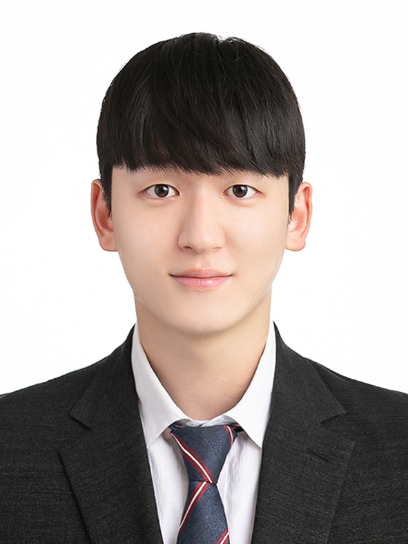

|
 |
Ryu Sangwon
M.S/Ph.D. student at POSTECH
Email : r8uuuuuuuu@gmail.com |
Research Interests
- Natural Language Processing
- Summarization
- Question and Answering
Education
- POSTECH, Natural Language Processing Group March 2023 - current,
M.S/Ph.D. in Artifical Intelligence
Advised by Prof.Yunsu Kim
-
Ajou University March 2016 - February 2023,
B.S. in Software Engineering & Artifical Intelligence(Micro)
Work
- July 2022 - December 2022, 한국표준협회, 온라인 혐오표현 식별모델 개발
Experiences
- February 2022 – January 2023, Undergraduate Research Intern, Ajou University, Lamda Lab,
Advised by Prof.Kyung-Ah Sohn
- February 2021 – January 2022, Undergraduate Research Intern, Ajou University, HMS Lab,
Advised by Prof.Sangeun Oh
Paper
- Query Control for Fluent Query focused Summarization
Ryu Sangwon, Kyung-Ah Sohn
HCI Korea 2023 , December 2022
[ paper ]
- 자연어 추론 형태를 적용한 퓨샷 러닝과 지도 대조 손실 함수
Ryu Sangwon, Kyung-Ah Sohn
한국통신학회 2022년도 하계종합학술발표회 , June 2022
[ paper ]